6:30 a.m., Atascadero. The first rays of sunlight wash over the downtown, the sunken gardens fountain sparkling with gold. The shop owners bustle through the empty streets, opening up their stores. Atascadero's downtown area is full of small businesses. These shops and restaurants are what make our downtown unique, characterizing it with warmth and friendliness.
Though these places all work together to make an enjoyable downtown, each one is different. From the shops on Entrada to the restaurants on El Camino, each one is individual.
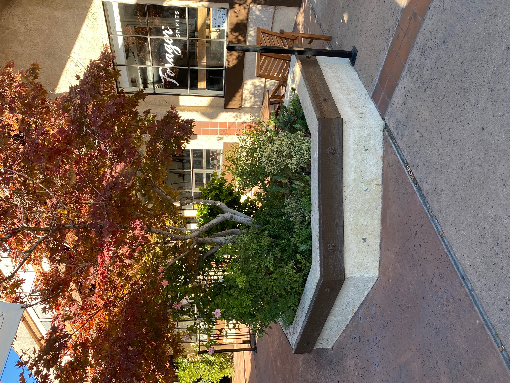
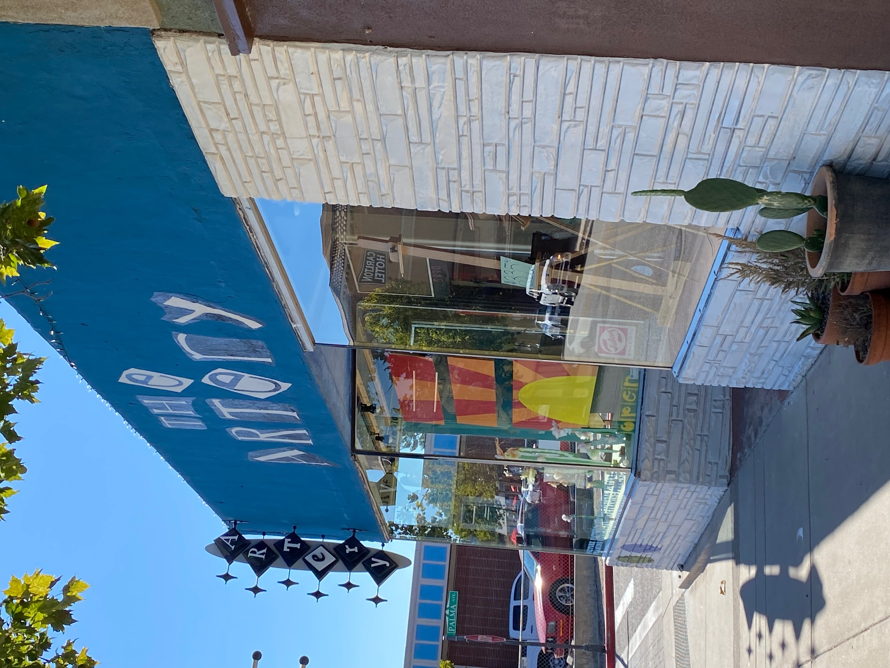
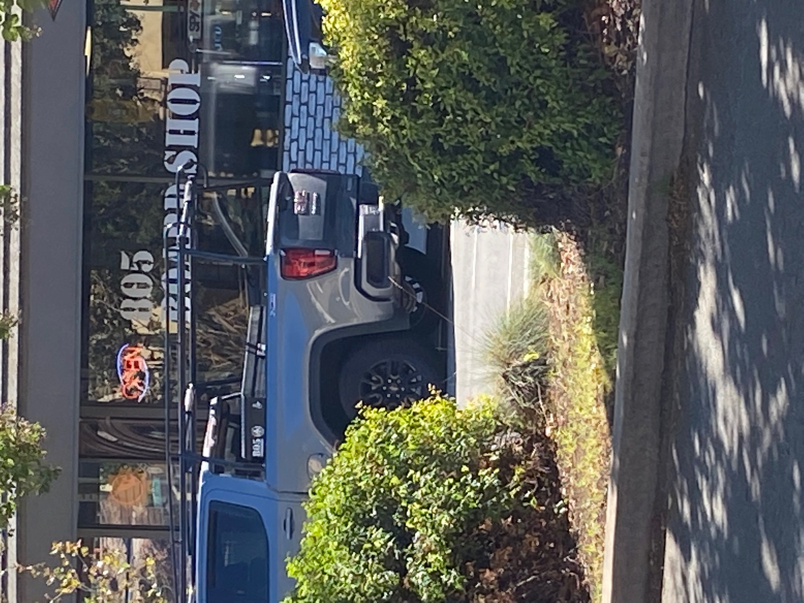
Amazing Architecture
The first things you will see when you go downtown are the amazing buildings.
The most noticeable buildings are the City Hall, La Plaza, and the Carlton Hotel. The latter two are modeled after the Italian Renaissance style first used by the City Hall. The City Hall was built from 1914 to 1918. However, the very first building built in Atascadero is known as the Estrada Adobe, which was built in 1797. Many other buildings downtown follow this theme as well.
The downtown architecture is amazing, but what's inside of these buildings is even more so.
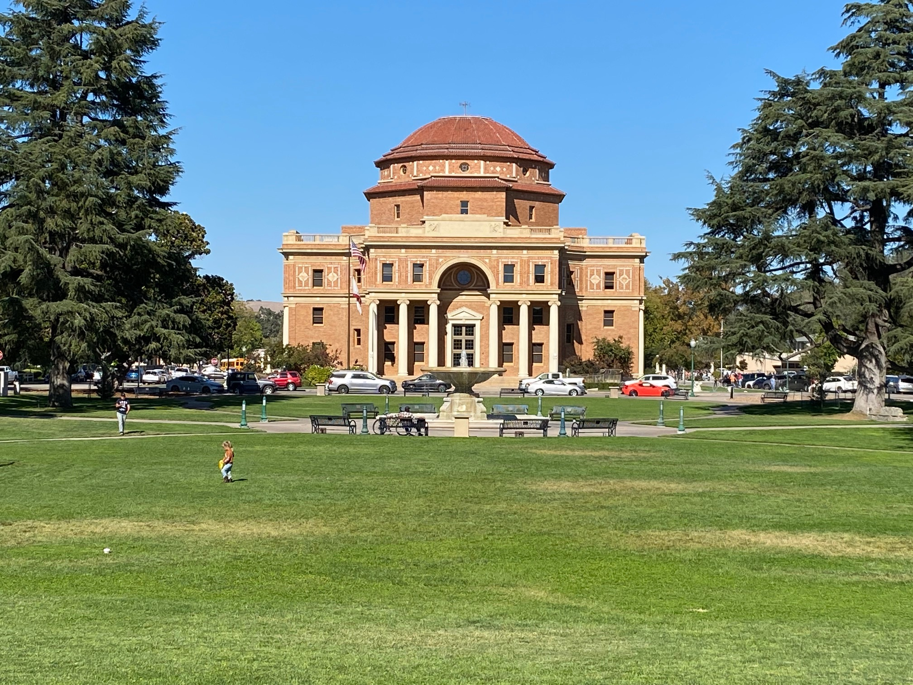
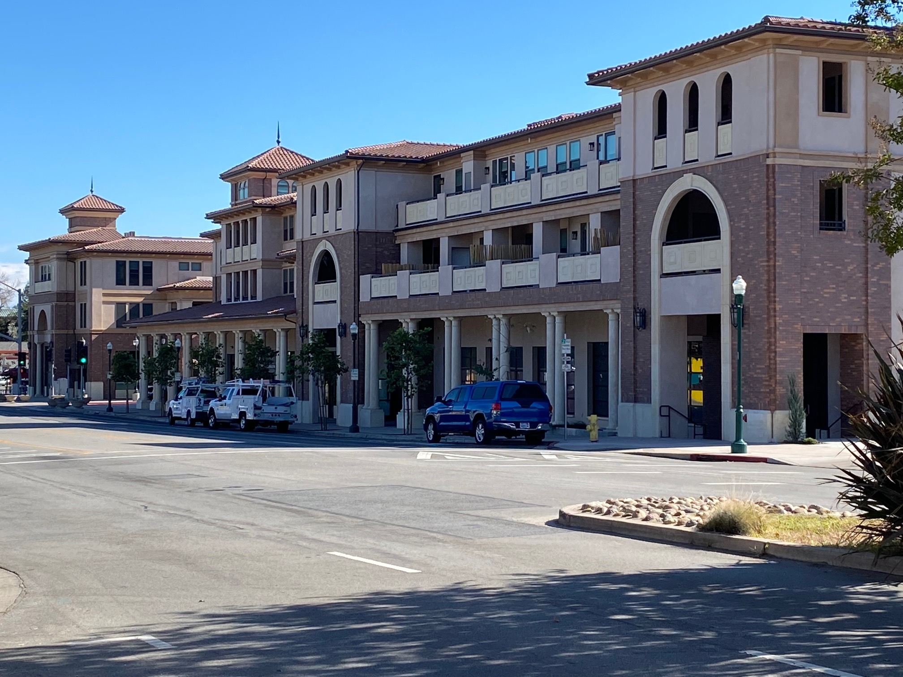
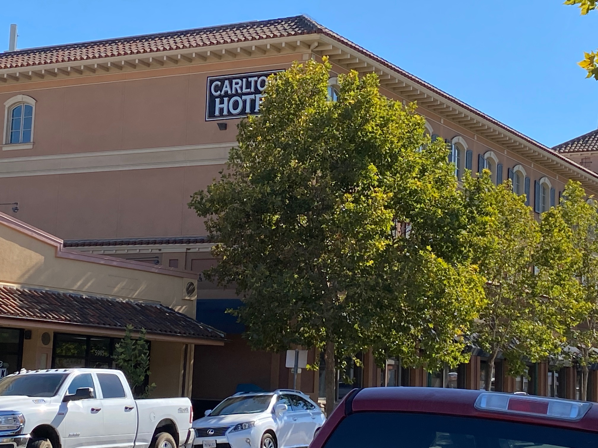
Fantastic Food
Inside many downtown buildings in Atascadero you will find delicious food.
Some of Atascadero's most iconic restaurants are Sylvester's burgers, Tent City Beer Co., and Colony Market & Deli. Between Traffic Way, West Mall, El Camino, and Palma Avenue, there are 11 restaurants. One of these restaurants, Street Side Alehouse, was voted best restaurant in 2020.
Though the restaurants are fantastic, the shops are equally so.
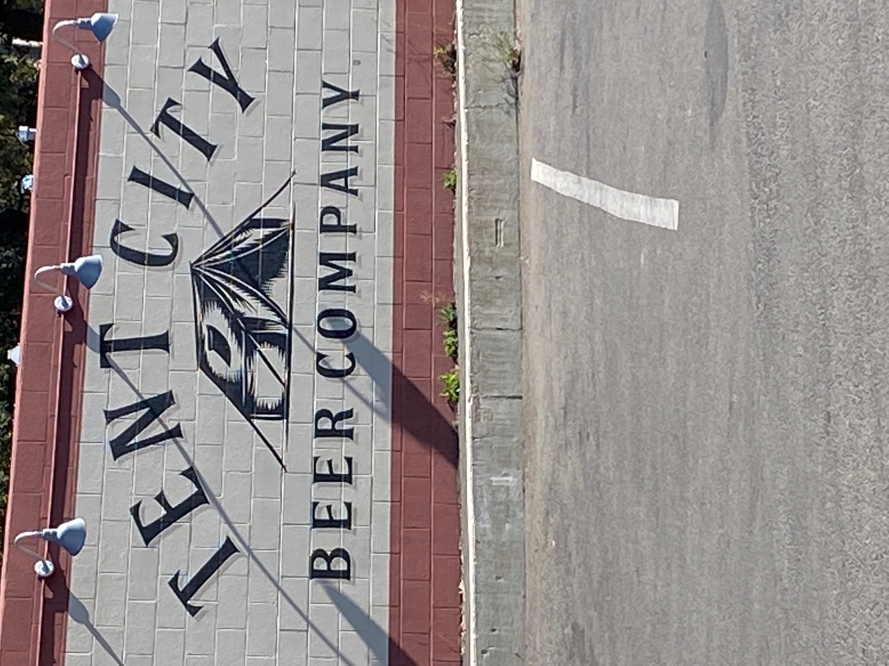
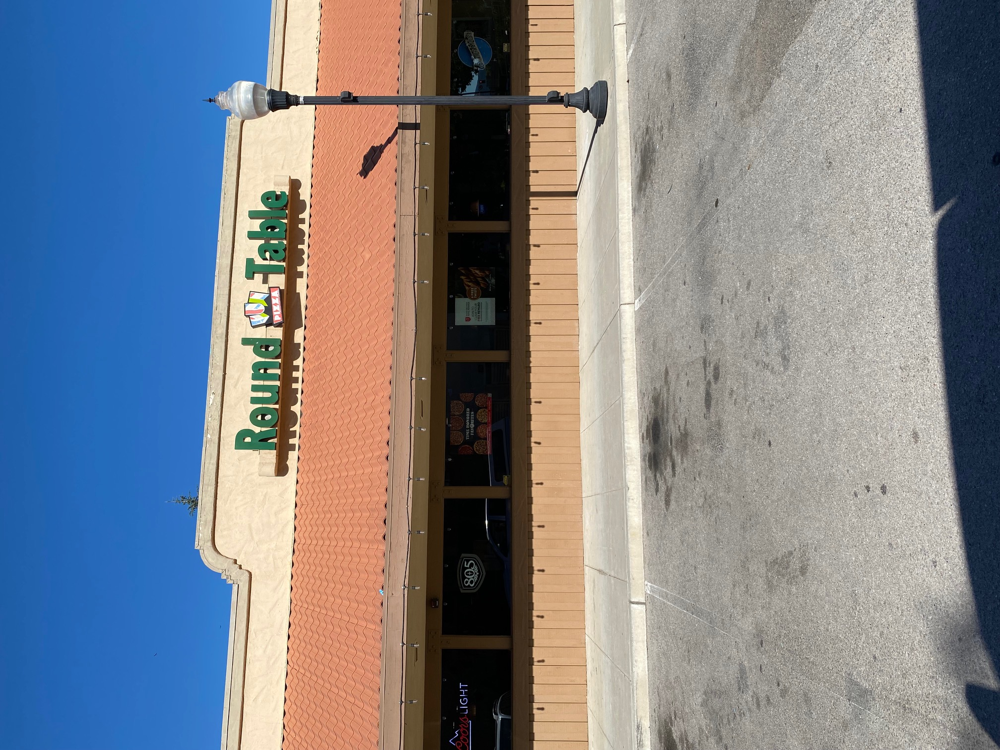
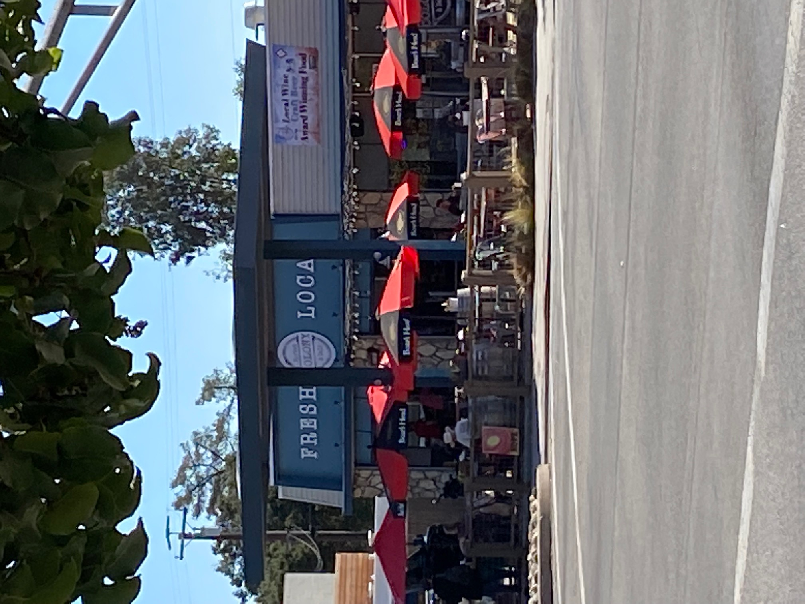
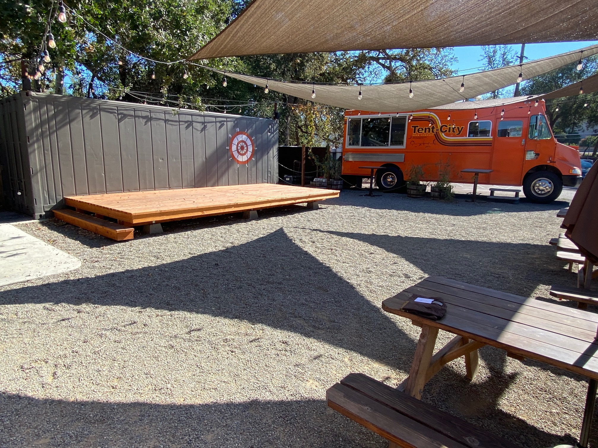
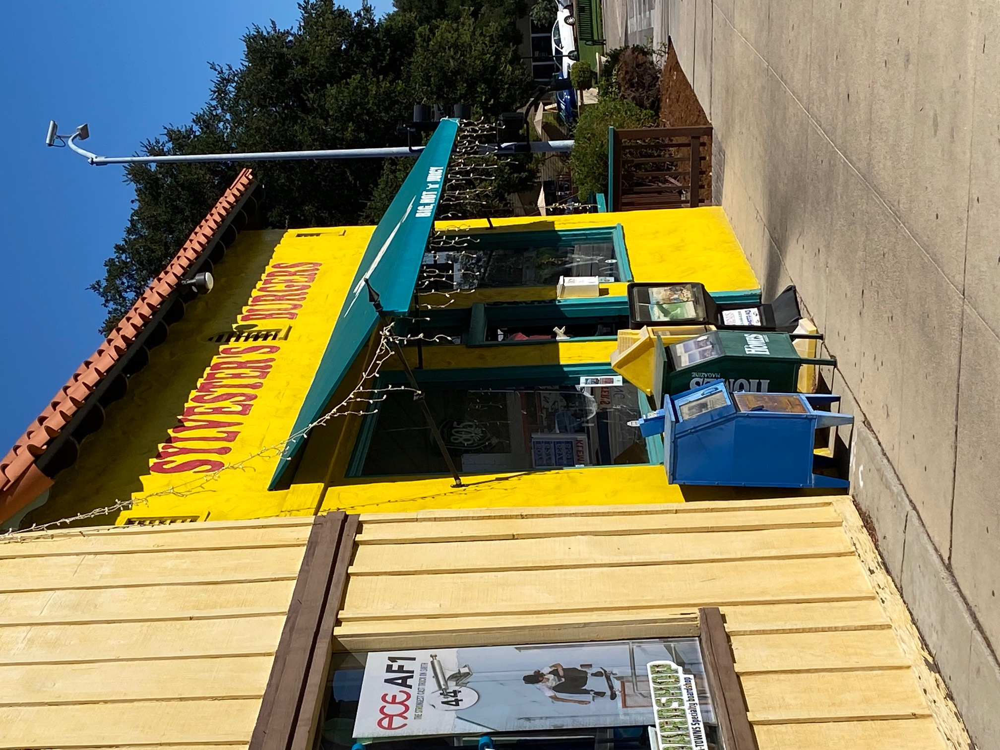
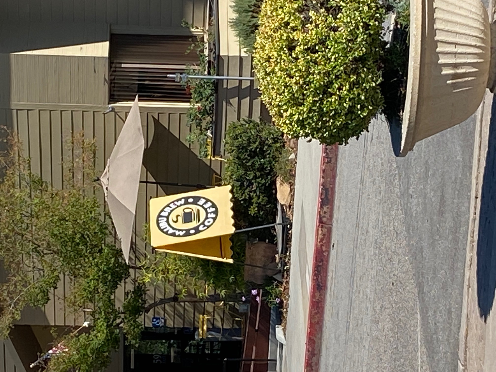

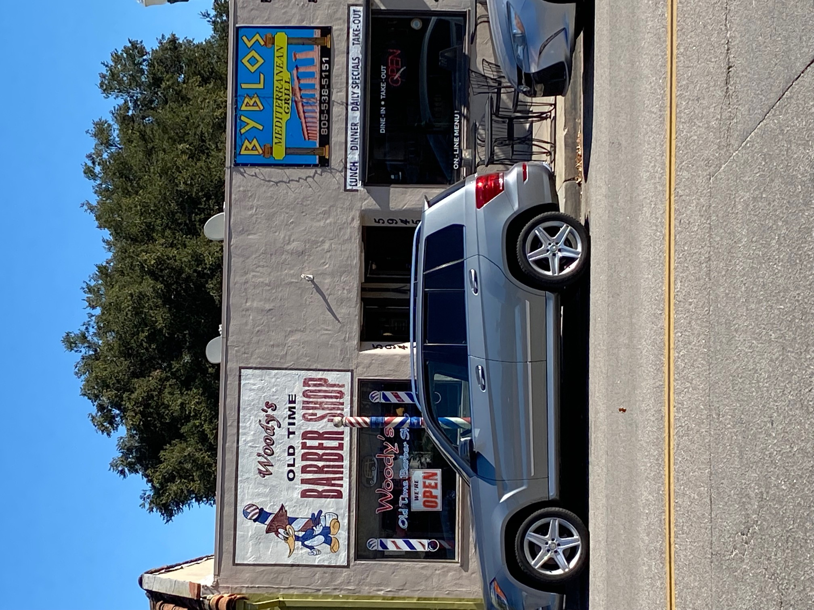